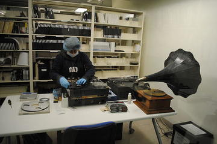

Software livre para instituições que possuem arquivos permanentes e memoriais.
Desenvolvido para facilitar a gestão de acervos de valor histórico com precisão técnica.

Use a Nobrade (ou não).
Não desperdice o legado de arranjos e descrições. Avance com boas práticas e flexibilidade estrutural.

Acesse os documentos do acervo.
Adicione objetos digitais, sejam eles imagéticos, sonoros ou audiovisuais em alta performance.

Uma instalação, muitas instituições.
Cadastre diversos lugares e atribua equipes autônomas em uma única infraestrutura.
Características
O Farinha foi construído sobre oito características fundamentais que garantem a adaptação institucional e o acesso aos metadados e acervos.
Fácil Implantação
Instalação simples e rápida, com poucos passos para colocar o sistema em funcionamento.
Multi-institucional
Gerencie diversas instituições na mesma plataforma, com isolamento e segurança. Descreva-as com a norma ISDIAH.
Multisetorial
Estrutura preparada para refletir a complexidade organográfica de qualquer organização.
Multiacervos
Fundos descritos com Nobrade e Coleções com metadados personalizados, reunidos em um ecossistema digital unificado.
Equipes Autônomas
Permissões granulares que permitem que cada equipe gerencie seu próprio fluxo de trabalho.
Mapa
Georreferenciamento de setores e acervos com base em sua localização atual de custódia.
Encontre Tudo
Sistema de busca avançado com pesos, navegação pela estrutura institucional e de arranjo e consulta em linguagem natural com IA (em breve).
Código-Fonte Livre
Software livre de verdade, garantindo soberania digital e sustentabilidade técnica.
Objetos Digitais
Acesse representantes digitais de qualquer gênero documental. Itens documentais textuais, sonoros, audiovisuais e imagéticos podem ser acessados diretamente na plataforma.

Textuais
Imagens ou formatos de documentos textuais, com suporte previsto a camadas de apoio (transcrição, tradução etc).
Imagéticos
Visualize itens documentais em três modalidades: um lado, dois lados (frente e verso) e galeria (várias imagens).
Sonoros
Reprodutor integrado para áudios, como gravações de entrevistas e músicas.
Audiovisuais
Reprodutor integrado de vídeo para assistir aos documentos audiovisuais.
Equipe de Desenvolvimento
Especialistas dedicados a criar a nova geração de plataformas para entidades de custódia.
Com formação em Arquivologia e Ciência da Informação pela UFBA e experiência em plataformas digitais e tecnologias da informação aplicadas a arquivos permanentes e memoriais. Atua como Chefe do Escritório Regional Nordeste do Arquivo Nacional, cedido pela UFBA, onde é Arquivista. Membro do Laboratório de Humanidades Digitais (LABHDUFBA) e do Raul Hacker Club.

RICARDO
SODRÉ
ANDRADE
Coordenador
Desenvolvedor com mais de 10 anos de experiência em aplicações web e móveis, atuando em diversas áreas, linguagens e frameworks. Atualmente, estuda cibersegurança, impressão e modelagem 3D, eletrônica e robótica. Membro do Raul Hacker Club.

PABLO
SOARES
Desenvolvedor Sênior
Atua como Analista em Tecnologia da Informação na DATAPREV. Graduada no Bacharelado Interdisciplinar em Ciência e Tecnologia pela UFBA e é Especialista em Engenharia de Software.

BEATRIZ
AZEVEDO
Desenvolvedora
Gerente de projetos e arquiteto de soluções. Graduado em Análise de Sistemas e Tecnólogo em desenvolvimento de sistemas, possui especialização em Computação em Nuvem. É um entusiasta em implementação de soluções baseadas em software livre, impressão 3D e da cultura Maker.

CRISTIAN
PRIVAT
Gerente de Projeto
Comece agora
O Farinha é um software livre. Pessoas e instituições podem começar hoje mesmo a gerenciar seus acervos com Farinha, basta acessar nossa documentação!
Quer ajuda? Contrate serviços de instalação, configuração ou treinamento!
Contato
Entre em contato ou nos acompanhe nas redes.